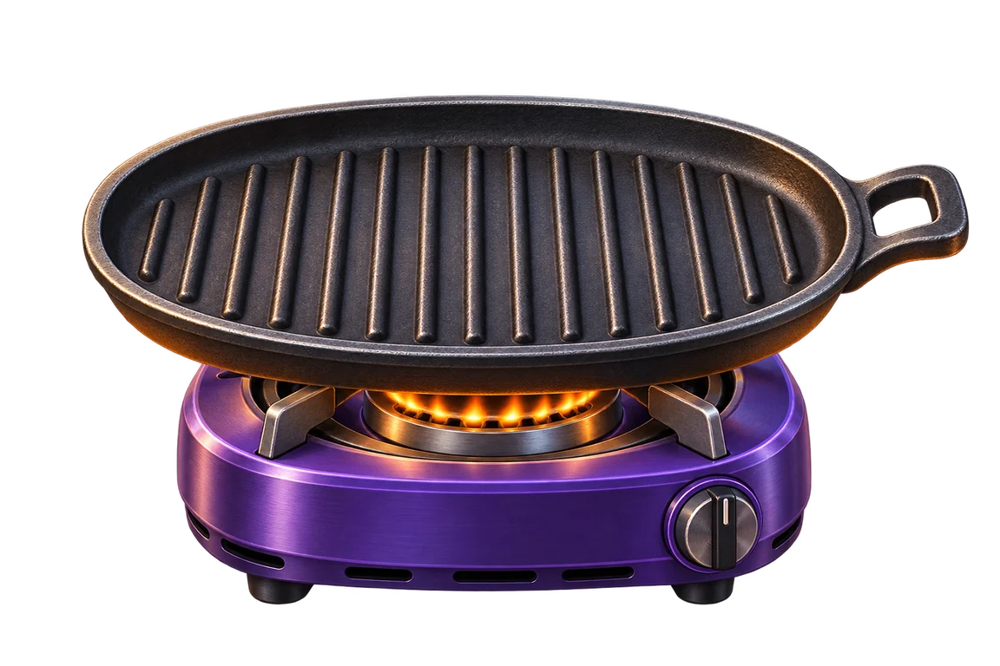

GUGU MACKEREL / 008손님은 전부 비둘기.
오늘도 고등어 굽습니다.
영업 중고등어를 구워 비둘기에게 파는 게임
첫 번째 손님
구구. 아직 안 구웠어요?적당히 노릇한 걸로 주세요.

불판이 비어 있어요불판 준비 완료0%/뒤집기 0회
생고등어노릇 58–82%타요!
STATUS · 첫 장사 준비 중비둘기 취향은 존중합니다.
TODAY'S BUSINESS
오늘의 장사
판매한 고등어0마리
오늘 매출0원
태운 고등어0마리
첫 손님이 기다리는 중입니다. 비둘기라고 막 대하면 안 됩니다.